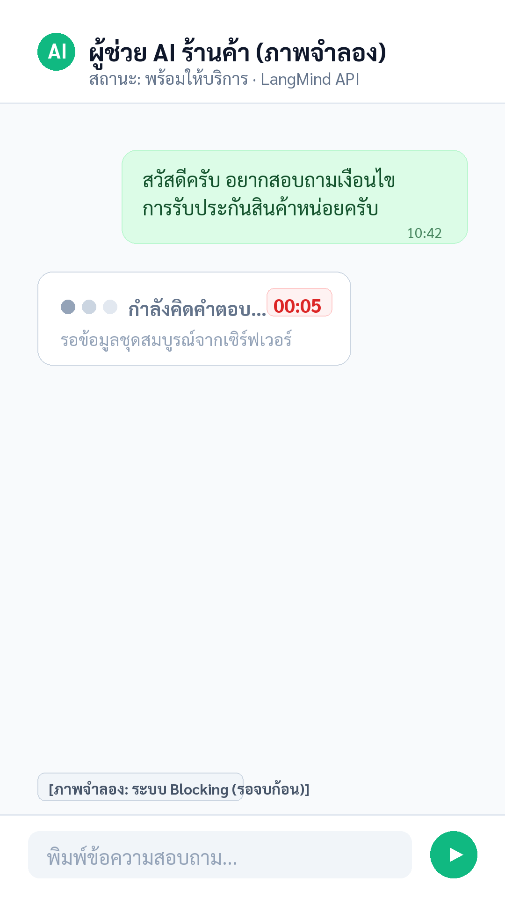
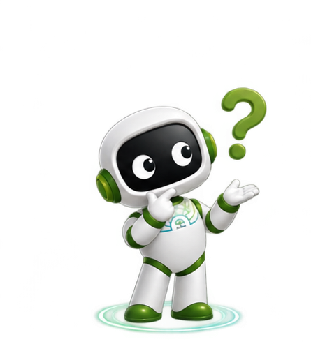
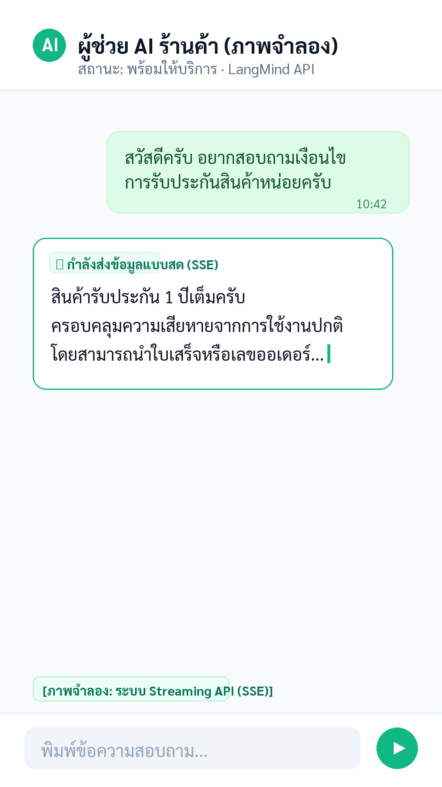
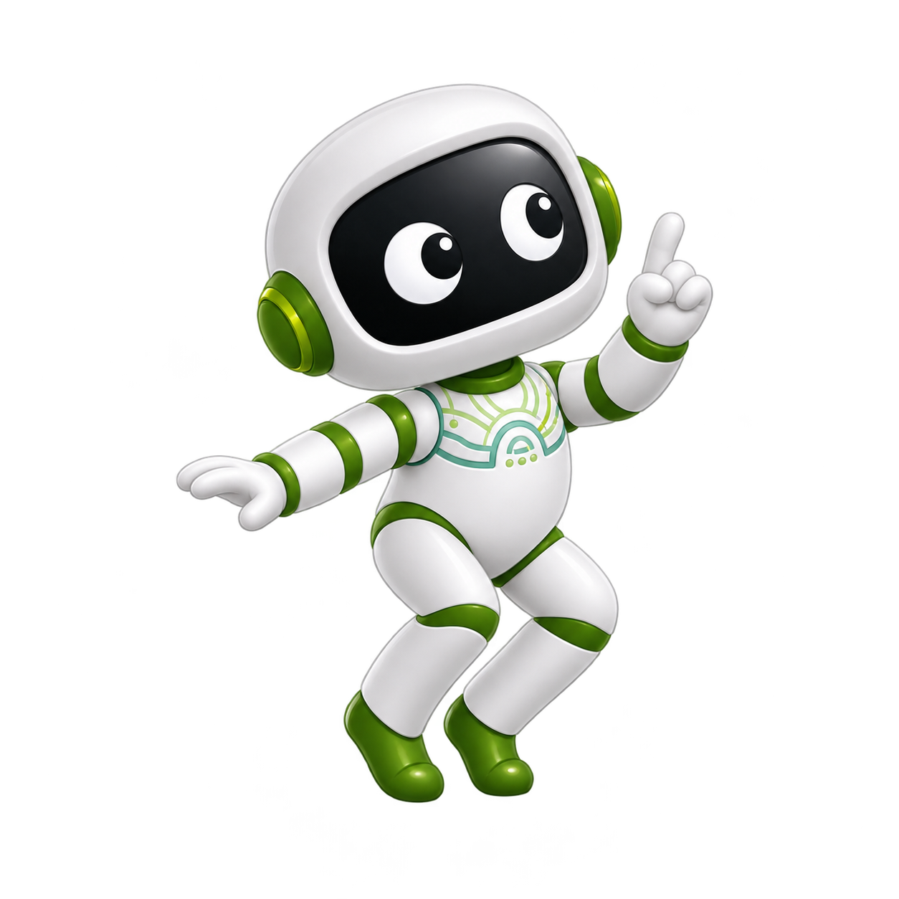

EP03 · 01 / 05
ทำไมแชทถึงดูเหมือนค้าง?

ภาพจำลอง • ตัวเลขเวลาไม่ใช่ผลวัด API

EP03 · 02 / 05
ต่างกันที่ข้อมูลกลับมาเป็นช่วง
BLOCKING · รอคำตอบครบก้อน
STREAMING · รับ event เป็นช่วง

ภาพเปรียบเทียบจำลอง • ไม่ได้วัดความเร็วหรือ latency จริง
EP03 · 03 / 05
ลำดับ event ของ SSE
LangMind API · POST /chat/message
1
message_start
เริ่ม turn และส่ง IDs
2
message
ชิ้นส่วนคำตอบ
3
citations
มีได้ตามผลที่ส่งกลับ
4
message_end
คำตอบเต็มและ usage; terminal event
Client App · อ่าน stream และจัดการ UI
แผนภาพอธิบายตาม API snapshot • ไม่ใช่ network trace จริง
EP03 · 04 / 05
แอปต้องต่อข้อมูลและอัปเดตหน้าจอ
1Server เก็บ API key และส่ง POST /chat/message
2แอปรับและอ่าน SSE events
3ต่อ message chunks แล้วอัปเดต UI
4ถือว่าจบเมื่อได้รับ message_end
ตัวอย่างหน้าที่ integration ฝั่งแอป

EP03 · 05 / 05
จำ flow นี้ไว้

ตัวอย่างภาพประกอบ • ไม่ใช่ผลเรียก API จริง
เก็บ API key ไว้ฝั่ง serverรอ message_end ก่อนถือว่าคำตอบสมบูรณ์
เคยส่งคำถามแล้ว
ต้องรอหน้าจอนิ่งไหม?
01 / 11
Blocking รอให้คำตอบ
ครบก้อนก่อนส่งกลับ
02 / 11
POST /chat/message ใช้ SSE
รับข้อมูลเป็น event
03 / 11
ข้อความจำลองทยอยปรากฏ
ไม่ได้วัดความเร็ว API
04 / 11
message_start
แจ้งการเริ่มและ IDs
05 / 11
message ส่งชิ้นส่วนคำตอบ
ระหว่าง stream
06 / 11
citations อาจมีได้ · message_end
ยืนยันคำตอบสมบูรณ์
07 / 11
แอปรับ event แล้วต่อชิ้นส่วน
เพื่ออัปเดตข้อความบน UI
08 / 11
เก็บ API key ไว้ฝั่ง server
รอ message_end ก่อนปิด turn
09 / 11
ส่งคำขอ → อ่าน event →
แสดงผลทีละชิ้นในแอป
10 / 11
API key อยู่ฝั่ง server
ภาพทั้งหมดเป็นตัวอย่างจำลอง
11 / 11